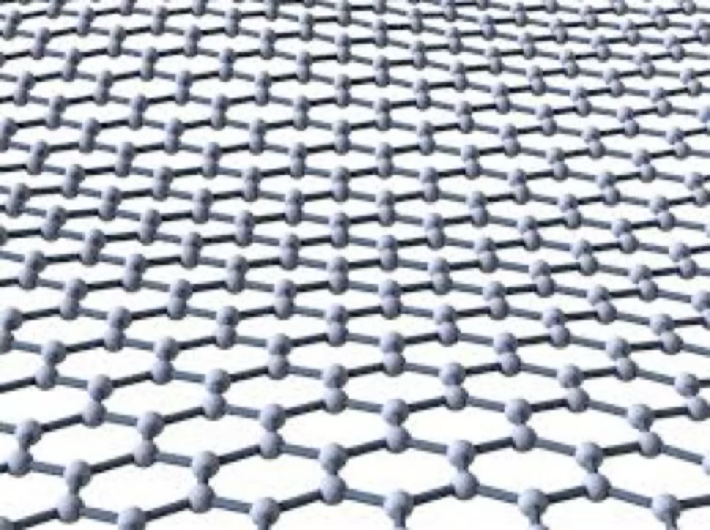
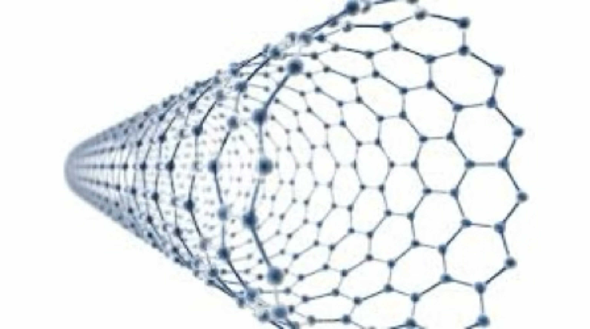
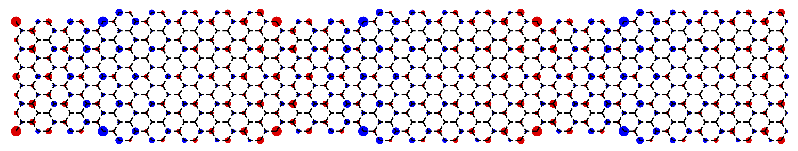
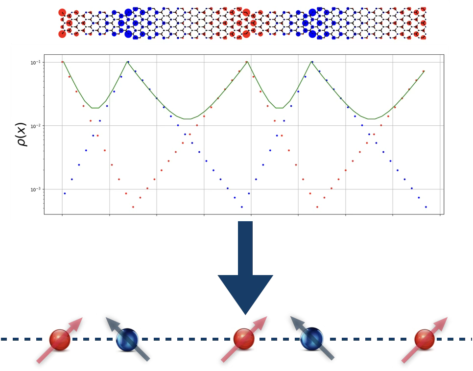
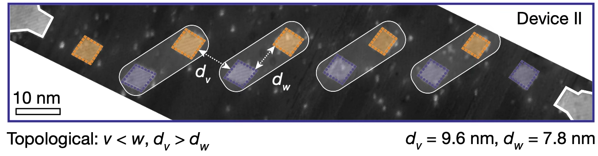
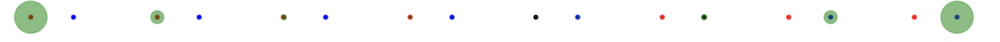
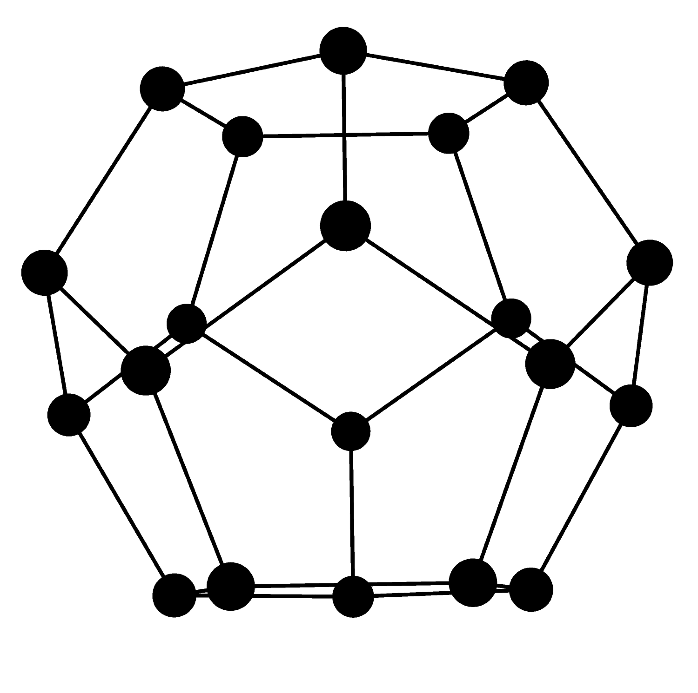
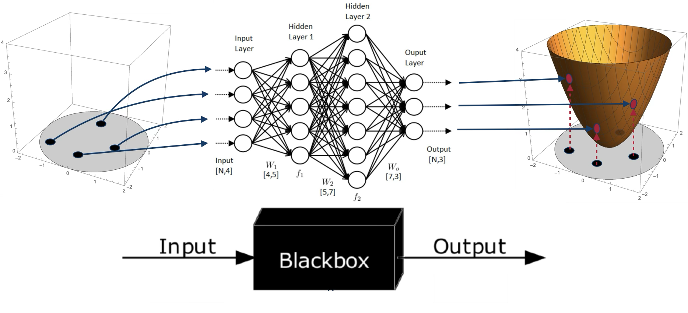
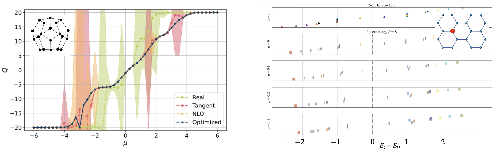

Quantum Monte Carlo Simulations of Carbon Nano-Systems
Carbon Nano-Systems




Examples
Hamiltonian
- General Hamiltonian is of the form
\[ H = \sum_{yx} \left(p^\dagger_y K_{yx} p_x + h^\dagger_y K_{yx} h_x \right) + \frac{1}{2} \sum_{yx} \rho_y V_{yx} \rho_x - \mu \sum_x \rho_x \]
- \(\rho_x\equiv p_x^\dagger p_x^{}-h_x^\dagger h_x^{}\) (particle and hole creation/annihilation operators)
The Hubbard model
For most of the work presented here we use tight-binding dynamics and Hubbard onsite interaction:
\[\begin{align} K_{xy} &= \kappa \delta_{\langle xy \rangle} & V_{xy} &= U \delta_{xy}. \label{eq:hubbard} \end{align}\]

Attempting a direct diagonalization of \(H\)
\(N_x=72\) sites
Full diagonalization of this problem
Dimensionality of the problem scales as \(4^{N_x}\)
Example: \(4^{72}=22300745198530623141535718272648361505980416\)
Introduce Auxiliary Field \(\phi\)

Hubbard-Stratonovich transformation
\[e^{-\frac{\delta U}{2}\rho_{x,t}^2}\propto\int d\phi_{x,t}e^{-\frac{\phi_{x,t}^2}{2\delta U}+i\phi_{x,t}\rho_{x,t}}\]
“Linearized” the density term
Integration measure \(\mathcal{D}[\phi]\)
\[\int \mathcal{D}[\phi]=\int\Pi_{x,t}d\phi_{x,t}\]
High-dimensional integral!! Enter Monte Carlo. . .

F. Temmen, T.L., et al. Phys.Rev.B 112 (2025) 045134
Lowest energy state exhibits “localization”

QMC Simulations
Localizations persist with strong interactions

- T.L., U.-G. Meißner, L. Razmadze Phys.Rev.B 106 (2022) 195422
An effective theory for 1-D spin chain

\[ H_{1D}= -\sum_ka^\dagger_k \begin{pmatrix} m_s & t_Ae^{ik}+t_Be^{-ik}\\ t_A e^{-ik}+t_Be^{ik} & -m_s \end{pmatrix} a^{}_k \]
The interacting SSH model

- Topological \(t_1<t_2\), \(t_1=v,\ t_2=w\)


- Experimentally realizable
- Silicon quantum dots Kiczynski et al., Nature 606 (2022) 694
- Artificial lattices Meier et al., Nature Commun. 7 (2016) 13986
Localized spin centers w/ defects and interactions

Examples



Alleviating the Sign Problem w/ Contour deformations
Push domain of \(\phi\in\mathbb{R}^N\to\mathbb{C}^N\)
- \(\exists\) certain manifolds \(\mathcal{T}\subset\mathbb{C}^N\) where \(S_{\mathcal{I}}[\phi\in\mathcal{T}]={\rm constant}\)
\[\begin{align} \int_{\phi\in\mathbb{R}^N}&\mathcal{D}[\phi]e^{-S[\phi]}\\ \to& \sum_{\mathcal{T}}e^{-iS_{\mathcal{I}}^{\mathcal{T}}}\int_{\varphi\in\mathcal{T}\subset\mathbb{C}^N}\mathcal{D}[\varphi]e^{-S_{\mathcal{R}}[\varphi]} \end{align}\]

- M. Cristoforetti et al., Phys.Rev. D88 (2013) 051501
- Kanazawa & Tanizaki JHEP 1503 (2015) 044
- Location of thimbles not know a priori
- Can approach thimbles via holomorphic flow
- However, determining exact locations of all relevant thimbles just as hard as original sign problem
- Numerically intensive
- Train a NN to “learn” location of Lefschetz thimbles

- J.-L. Wynen, T.L., et al., Phys.Rev.B 103 (2021) 125153
- M. Rodekamp, T.L., et al., Phys.Rev.B 106 (2022) 125139

\[\phi_{x,t}\to\phi_{x,t}+i\phi_c\quad\forall\ x,t\]

- M. Rodekamp, T.L., et al.,Eur.Phys.J.B 98 (2025) 36
- C. Gäntgen, T.L., et al., Phys.Rev.B 109 (2024) 195158